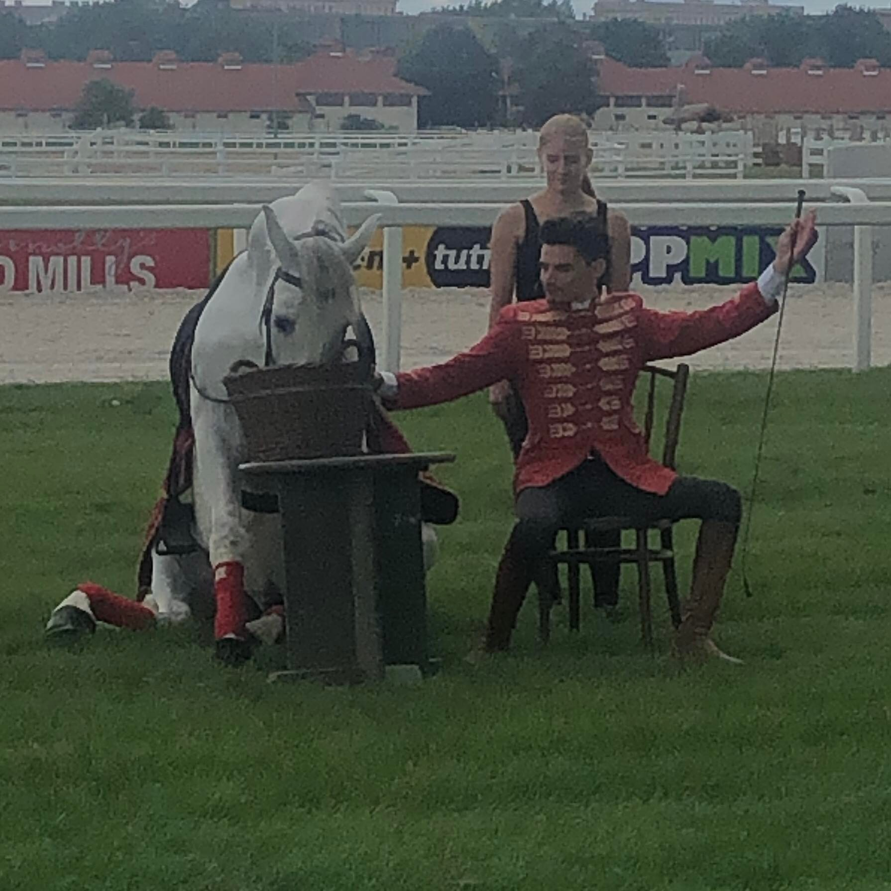
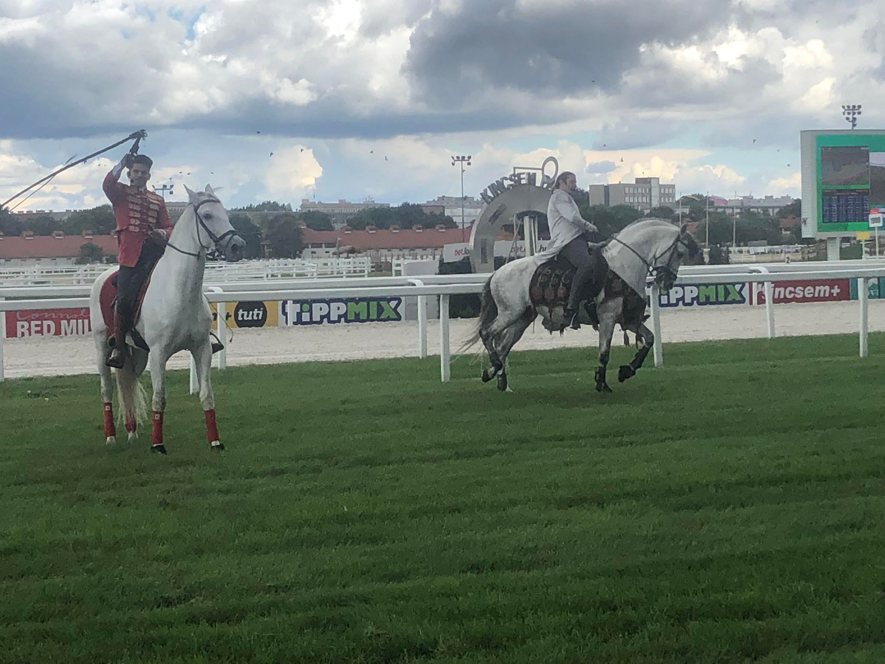

A lovas színház alapításának története több, mint 10 évvel ezelőttig nyúlik vissza. Annak idején Márkos Attila felkeresett engem egy TV-s riport kapcsán, hogy legyek az interjú alanya egy általa szerkesztett lovas műsorban az ATV-n. Akkor és ott egy barátság szövődött közöttünk. Már az interjút követően megállapodtunk a komáromi lovas színház jövőjét illetően, hiszen Attilának volt lovas épülete és lovai, én magam pedig művészeti vezetőként irányítanám a színházat.
Az alap ötlet tőlem és Sasvári Sándortól származik, hogy melyikünk volt előbb arról kár vitatkozni. Ő maga a társulatot összehívva, egy tavalyi Gladiátor előadás után, melyet már budapesti bázisunkon a Kincsem Parkban adhattunk elő, így szólt “Amit én megálmodtam, azt Pintér Tibor meg tudta valósítani”. Talán mondanom sem kell nagyon megérintettek a szavai, azóta ez az álom, mindkettőnk valósága lett.
A lovas színházi karrierem tehát valóban a komáromi székhelyű Magyar Lovas Színházban vette kezdetét. A képlet egyszerű volt: nekem volt társulatom és jómagam is lovas ember voltam, Attilának pedig volt egy fedeles lovardája és lovai. Hét évig működtünk együtt és építettük a színházat, amihez rengeteg tapasztalás és még több gyönyörű emlék fűződik.
Márkos Attila mindvégig fantasztikus emberként állt mellettem. Egymást kiegészítve, közös darabokat írva és íratva virágoztattuk fel a komáromi bázist.
Ennek ellenére a komáromi színház csupán évi 6-8 alkalommal játszott, ami egyúttal rádöbbentett arra az egyszerű tényre is, hogy nekem a lovas színházzal valami más küldetésem van. Több helyen kell, hogy lássák, nem szabad, hogy egy vidéki kisvároshoz kötődjön. A lovas színháznak Budapest kell, hiszen Magyarországról elmondhatjuk, hogy főváros orinetált szinte minden téren.
A hetedik Komáromban töltött év végére, Márkos Attilával szétváltak útjaink, a céljaink nem egy irányba tereltek bennünket. Ő maradt a komáromi Magyar Lovas Színház vezetője én pedig nekivágtam Budapestnek, mert a potenciált a fejlődésben és terjeszkedésben láttam.
A célom, ami miatt ma ebben a blogban felszólalok, az az, hogy tisztán láthassa a közönség is, miben különbözünk mi a budapesti Nemzeti Lovas Színház a komáromi Magyar Lovas Színháztól. Nos a tulajdonos és vezető személyében biztos. Szeretném kihangsúlyozni, hogy a komáromi lovas színház nem az én vezetésem alatt működik már egy jó ideje, nem követem nyomon szorosan a munkájukat és produkcióikat.
Én és az általam szervezett budapesti csapat a Nemzeti Lovas Színházban komoly sportmúlttal rendelkezik, rendszeres edzésekkel tartjuk magunkat karban. Aki nem lovagol legalább ilyen szinten, az óhatatlanul is gyengül a lovon, és ezt látom a komáromi munkán is. Ők nem azt választották, hogy lovas színészeket képezzenek és nem ebben próbálnak élen járni, noha ez lenne a lovas színház küldetése. Aki nem tudja beleálmodni magát a száguldó lovak adta életérzésbe, annak ez soha nem fog eufórikus boldogságot okozni. Nem fogja a lelkét eltölteni gyönyörrel, már pedig a mi szakmánk arról szól, hogy a lelkünk fényben pompázzon.
Az én olvasatomban a lovasz színház az, ahol maga a művész lóra pattan és ezt kisértetiesen hasonló szinten űzi mint egy profi, hivatásos lovas, míg ez nem valósul meg, nem beszélhetünk lovas színházról. Addig valami érdekes formáról van szó, ahol lovak is léteznek. Ilyen módon a lovas színházat, magát ezt a nívót, ahol akrobatikus elemekkel és lovas tudással ötvözött énekes produkció zajlik, valóban csak az általam vezetett Nemzeti Lovas Színház végzi egyre magasabb szinten.
Ez az én álmom volt nem Márkos Attiláé, és nem a most ott játszó színészeké akik valószínűleg a rájuk hagyott örökségemet próbálják verejtékkel kisajtolva még mindig megtartani.
Fontosnak tartom leírni, hogy nagyon sokat köszönhetek Márkos Attilának és csak bízom benne, hogy ezt ő is így gondolja, bár soha nem tesz említést rólam, még azoknak a nézőknek sem, akik még mindig Komáromban keresnek. Ezt nem tartom korrektnek és becsületesnek, hiszen rengeteg néző nem csak miattam, hanem a társulatom miatt is felkeresi a komáromi színházat.
Mindenféle hiúságot és nagyképűséget félretéve, azt gondolom: annak a hajónak én voltam a kapitánya. Nem is lehetett volna más, hiszen én voltam az a félőrült ember, aki megálmodta azt, hogy szőke lobogó hajjal, prüszkölő paripán, száguldó erőkkel vágtázunk a közönség előtt, mindezt zenével fűszerezve.
Külön megszólítanám azokat a művész barátaimat és konkrétan üzenve Gulyás Dénes – általam nagyon nagyra tartott – tenorista operaénekes kollégámnak, akivel személyesen ugyan nem ismerjük egymást, azonban egy alkalommal említette, hogy ami Komáromba folyik az nem igazán minőségi színház. Nos lehet, hogy igazuk van, de azok nem mi vagyunk, az nem Pintér Tibor színháza. Várok szeretettel a Kincsem parkba minden olyan barátomat és kollégámat, akik még nem látták a Nemzeti Lovas Színház produkcióit. Az előadásaink nem összekeverendőek a Muzsika Tv-n és egyéb kisebb csatornákon sugárzott komáromi színházi előadásokkal. Jöjjenek el hozzánk megnézni, a szerintem egyre inkább európai színvonalra és hungarikum díjra törekedő Nemzeti Lovas Színház értékeit, ahol a fantasztikus produkciókat 20-30 lovassal, kiváló énekesekkel és színészekkel mutatjuk be.
Mi utaztatjuk is az előadásainkat főleg tavasztól őszig. Rengeteg vidéki produkciónk van, ebben az évben Európába is vannak meghívásaink. Éppen egy dubai-i és egy pekingi turné előkészületeit végezzük, ezen kívül fellépünk még Ausztriában, a Felvidéken, Erdélyben és jelenleg Németországgal is tárgyalunk. Magyar bázisaink, Mórahalom, Diósgyőr és Bikal, azonban ez folyamatosan bővül azokkal a nagy kultikus történelmi városainkkal, akik úgy érzik, hogy szeretnének a Nemzeti Lovas Színházzal együtt dolgozni.
Az őszi és téli idényben itt játszunk Budapesten a Kincsem parkban, egy 600 férőhelyes fűthető fedeles lovardában, amit egy tavalyi támogatásunkból sikerült innoválni. Nyáros is fogunk természetesen a fővárosban játszani, a honlapunkon tájékozódhattok a részletes programjainkról.
A következő produkciónk a Trója lesz, aminél érdekesség képen behozok egy barátomat Berki Krisztiánt aki ugyan nem színész, de nagyon jó figurának tartom ehhez a szerephez. Nagyon sok fantasztikus és értékes művésszel dolgozunk itt együtt csak, hogy néhányat említsek Papadimitriu Attina, Kaszás Géza, Sasvári Sándor. Most kacérkodunk Borbéy Ricsivel, aki nemrég csatlakozott a társulathoz és nagy valószínűséggel a Trója című rock operában Hektort és a Mátyás, az igazságos cím szerepét fogja nálunk játszani.
Azonban nagyon nehéz dolgunk van, hiszen kevés a képzett színész, énekes, aki megfelelő módon tud lovagolni is. Nemrégiben létrehoztunk egy lovas színészképző akadémiát, ahol ezt az űrt igyekszünk pótolni és taníthatjuk ezt a pályát, hogy lehessen utánpótlás.